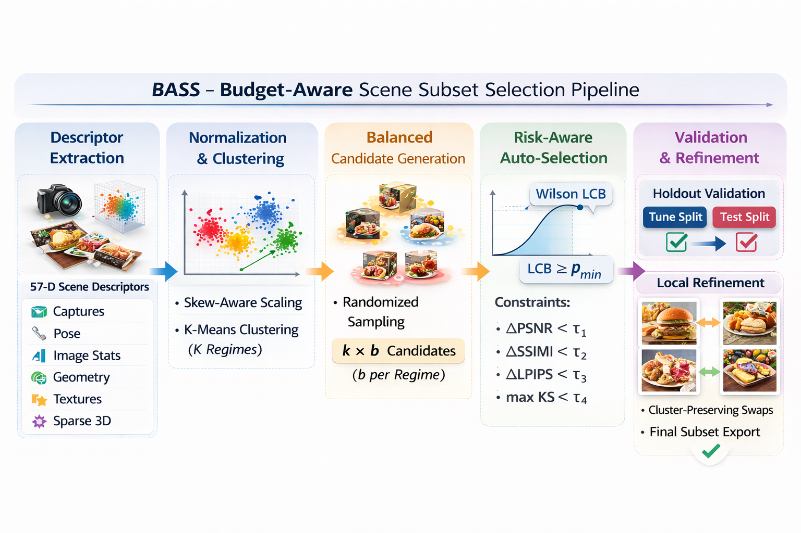
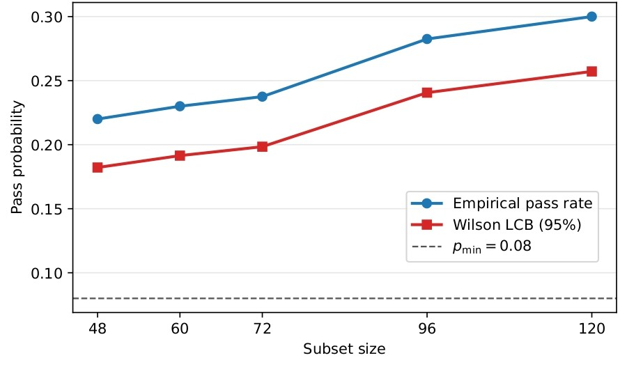
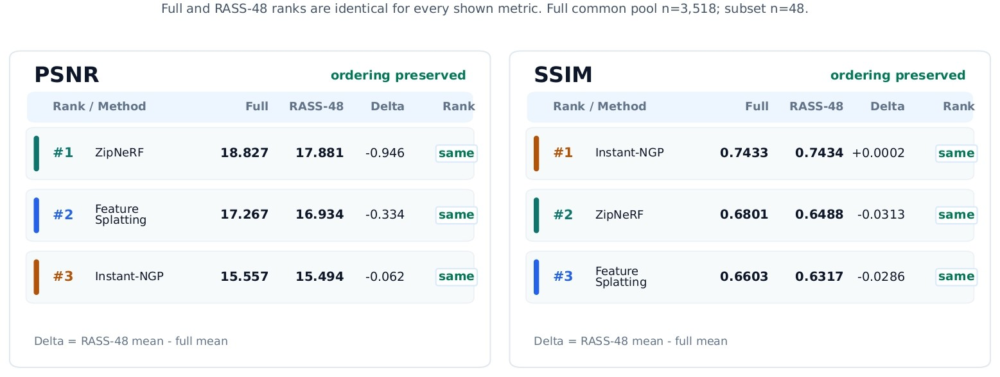

RASS: Risk-Audited Budget Selection for Compact NeRF Benchmark Subsets


Abstract
Reliable benchmarking is essential for comparing NeRF methods fairly, tracking progress, and ensuring reproducible conclusions across studies. Dataset-scale benchmarking of neural radiance field (NeRF) systems is expensive because each scene requires separate training and evaluation. On large and heterogeneous datasets such as Nutrition5k (approximately 5,000 scenes), exhaustive benchmarking is often impractical, while naive subsampling can produce unreliable aggregate estimates. We study budget-aware scene subset selection: selecting a compact set of scenes that preserves the conclusions of full-dataset benchmarks under explicit fidelity constraints. We introduce BASS, a risk-aware benchmarking framework that partitions the descriptor space into regimes, draws balanced candidate subsets for coverage, and recommends the smallest subset size whose joint-fidelity pass probability meets a target Wilson lower confidence bound. On 3,522 validated Nutrition5k scenes — converted into a NeRF-benchmarkable dataset using Pre-NeRF 360 and evaluated with Zip-NeRF full-image logs — BASS identifies 48-scene subsets that preserve mean PSNR, SSIM, and LPIPS within predefined tolerances while maintaining distributional similarity through a Kolmogorov–Smirnov constraint. Relative to exhaustive evaluation on the validated set, this reduces the number of benchmarked scenes by approximately 73× while providing an explicit reliability criterion for selecting subset sizes.
Five-Stage Selection Pipeline
The RASS methodology implements a sequential pipeline designed to bridge the gap between data coverage and statistical reliability:
- 1. Descriptor Extraction: For every scene, we generate a 57-dimensional descriptor vector summarizing capture conditions, photometric properties, and geometric structure (e.g., camera view coverage and texture complexity).
- 2. Normalization and Regime Discovery: Descriptors undergo skew-aware normalization and clipping to handle heavy-tailed distributions. We then employ K-Means clustering ($k=6$) to partition the descriptor space into statistically distinct "regimes," ensuring the selection captures the dataset's inherent heterogeneity.
- 3. Balanced Candidate Generation: To ensure uniform coverage across all identified regimes, candidate subsets are constructed by drawing an equal number of samples per cluster. This randomized sampling process is repeated across trials ($M=400$) for each evaluated budget size.
- 4. Fidelity-Event Audit: Each candidate subset is evaluated against a "fidelity contract" derived from the full dataset. A subset passes only if it simultaneously satisfies strict mean-gap tolerances for PSNR (±0.5 dB), SSIM (±0.01), and LPIPS (±0.01), while passing a Kolmogorov–Smirnov (KS) distributional guardrail to prevent biased selections.
- 5. Risk-Audited Budget Recommendation: Rather than selecting a single subset, RASS identifies the smallest budget where the Wilson Lower Confidence Bound (LCB) of the joint pass probability exceeds a target threshold ($p_{min} = 0.08$). This conservative rule minimizes the probability of endorsing "lucky" samples and identifies the optimal operating point on the cost–reliability frontier.

Results
The empirical evaluation of the RASS protocol is conducted on a population of 3,522 validated food scenes from the Nutrition5k dataset. Our experiments demonstrate that the framework successfully identifies compact subsets that maintain the evaluation integrity of the full benchmark while providing a controlled reduction in computational overhead.
Empirical Reliability Frontier
The selection process identifies optimal operating points by analyzing the Cost Reliability Frontier. This frontier tracks the joint pass probability, satisfying all mean and distributional constraints, across increasing budget sizes. Using the Wilson Lower Confidence Bound (LCB), we determine the smallest budget that meets our reliability target (pmin = 0.08).

- RASS-48 (Low-cost Screening): This subset achieves a ~73× reduction in scene count. It is the minimal operating point recommended for rapid model screening and preliminary ablation studies, yielding an empirical pass rate of 0.220 and a Wilson LCB of 0.182.
- RASS-96 (High-reliability Evaluation): A more robust configuration recommended for stable performance reporting, showing a significant increase in the Wilson LCB (0.241) under the same joint fidelity event.
Fidelity Validation of RASS-48
The exported RASS-48 subset is audited against the full Zip-NeRF population to confirm its statistical fidelity. The results, summarized in the table below, demonstrate that the subset preserves the central tendencies and distributional characteristics of the original performance logs.
| Metric | Full Population | Subset | Δ (Gap) | KS Distance |
|---|---|---|---|---|
| PSNR (dB) | 18.822 | 18.976 | 0.153 | 0.090 |
| SSIM | 0.679 | 0.685 | 0.005 | 0.074 |
| LPIPS | 0.341 | 0.341 | < 0.001 | 0.112 |
All deviations remain strictly within the accepted tolerances (|ΔPSNR| ≤ 0.5, |ΔSSIM| ≤ 0.01). Furthermore, the Kolmogorov–Smirnov (KS) distances are consistently below the 0.14 guardrail, indicating that the subset reflects the entire metric distribution rather than just the average performance.
Cross-Method Ranking Stability
To verify the generalizability of the subset beyond the certification method, we conduct a post-hoc diagnostic across Instant-NGP and Feature-Splatting. The RASS-48 subset identically preserves the performance rankings observed in the full dataset for both PSNR and SSIM (Zip-NeRF > Feature-Splatting > Instant-NGP).

While the global rankings are preserved, regime-level diagnostics indicate that local fidelity across all descriptor segments is a harder requirement that may necessitate larger budgets (e.g., RASS-96) for segment-specific analysis.
Citation
If you want to cite our work, please use this:
@article{almughrabi2026Rass,
title={RASS: Risk-Audited Budget Selection for Compact NeRF Benchmark Subsets},
author={Ahmad AlMughrabi, Flavià Serret, Ricardo Marques, Petia Radeva},
journal={arXiv preprint 2601.07581},
year={2026}
}